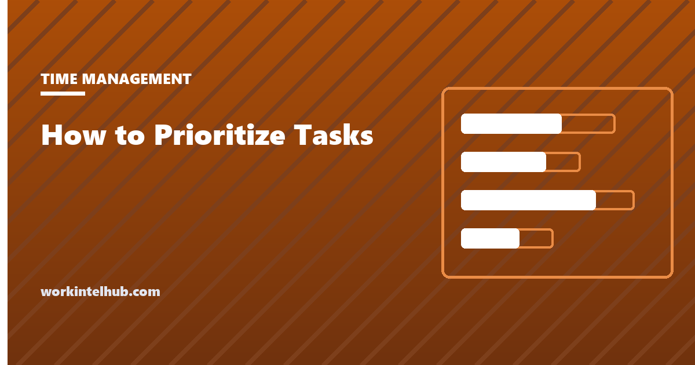

How to Prioritize Tasks

Prioritising is deciding what not to do yet. Most people experience it as the opposite, a search for the task that deserves to be first, and that framing is why it fails: with twenty items on the list, picking the first one leaves nineteen still waiting, and the anxiety that comes from an unranked list stays exactly where it was. A method that works produces an order for the whole list and a short set that is dropped or deferred, so that the day starts with three things instead of twenty.
The tool below scores a pasted list by impact, urgency and effort and returns the order, today's three and the candidates to drop. The rest of the page compares the six methods people actually use, explains when each fits, and covers the two mistakes that make priority lists longer rather than shorter.
Task prioritisation tool
Score = (impact × 2 + urgency) ÷ effort. Impact is what happens if the task is done well; urgency is what happens if it waits; effort is time and difficulty. Nothing typed here leaves your browser.
Six methods compared
| Method | How it works | Best for | Weakness |
|---|---|---|---|
| Eisenhower matrix | Sort by urgent and important into four boxes; do, schedule, delegate, drop | A cluttered list with a lot of other people's urgency in it | Everything feels important; the boxes need honest effort estimates to be useful |
| Weighted scoring (this tool) | Rate impact, urgency and effort; rank by score | Lists of 10 to 30 items with real trade-offs | Scores feel precise and are not; use them to order, not to argue |
| MoSCoW | Must, should, could, won't | Scoping a project or a release with stakeholders | Everything becomes a must unless someone enforces the won't list |
| ICE / RICE | Impact, confidence, ease (RICE adds reach); multiply or divide | Product and growth backlogs with many comparable ideas | Overkill for a personal to-do list |
| 1-3-5 or the Ivy Lee six | Cap the day at a fixed number of tasks in order | Daily planning once the big list is ranked | Does not rank the big list; it assumes you already know |
| Eat the frog | Do the hardest important task first thing | People whose problem is avoidance, not choice | One task a day; the rest still needs an order |
The methods are not rivals. A weekly ranking (scoring or the matrix) feeds a daily cap (1-3-5 or the six), and the frog is simply the top of the daily list done first. The weekly planner and daily schedule pages are the two documents that hold the result.
How the scoring works, and why effort is a divisor
The tool's formula weights impact twice as heavily as urgency and divides by effort. The double weight on impact exists because urgency is the dimension people already overcount: the inbox supplies it continuously, and a list ranked by urgency alone is a list of other people's priorities. Impact has to be asserted deliberately, which is why rating it is the useful part of the exercise. Dividing by effort pushes cheap, valuable tasks up and expensive, marginal ones down, which is the 80/20 logic described on the Pareto page: the hours that produce most of the result are rarely the longest ones.
Rate quickly. The point of a 1-to-5 scale is that it is coarse; spending five minutes deciding whether a task is a 3 or a 4 is procrastination with a spreadsheet. The scores order the list; they do not have to be defended.
The two mistakes that make lists longer
Ranking without dropping. A prioritised list of twenty items is still twenty items. Every method above produces a bottom, and the bottom is for deleting, deferring with a date, or delegating. The tool labels these; the discipline is acting on the label. A written not-now list, reviewed monthly, is where deferred items go so they can be dropped from the working list without being lost.
Re-prioritising instead of working. Rank once a week, cap once a day, and then do the work. Reordering the list every time something arrives is task switching with extra steps, and the context switching research puts a real cost on it. New arrivals go to the bottom of the list until the next ranking unless they are genuinely urgent, and "genuinely urgent" means a cost today, not a sender who would like it today.
For teams the same rules apply one level up: a ranked backlog, a weekly cap, and a decision in the meeting about what is not being done, said out loud so that nobody is quietly carrying it.
Key takeaways
- Prioritising is deciding what not to do yet. A method works if it orders the whole list and names what gets dropped.
- Six methods: Eisenhower, weighted scoring, MoSCoW, ICE/RICE, 1-3-5, eat the frog. Use a weekly ranking plus a daily cap.
- Score = (impact × 2 + urgency) ÷ effort. Impact is double-weighted because urgency is already overcounted; effort divides so cheap valuable tasks rise.
- Rate fast; scores order the list, they do not have to be defended.
- Rank weekly, cap daily, and do not re-rank every time something arrives.
Frequently asked questions
What is the best way to prioritize tasks?
Rank the whole list once a week by impact, urgency and effort, drop or defer the bottom, then cap each day at three to six tasks in order and do them. The scoring tool on this page does the ranking; the Eisenhower matrix is the other method that works well for personal lists.
How do I prioritize when everything is urgent?
Separate urgency from importance. Urgency describes the cost of waiting; importance describes the value of doing it well. When everything feels urgent, most of it is other people's urgency. Rate impact independently and let the score order the list; genuinely urgent means a cost today, not a request for today.
What is the difference between urgent and important?
Urgent tasks have a cost if they wait: a deadline, a customer, a penalty. Important tasks have a value if they are done well: a result that matters to you or the organisation. Tasks can be either, both or neither, and the four combinations are the Eisenhower matrix.
How many tasks should I plan per day?
Three substantial ones, up to six including small items. The 1-3-5 rule (one big, three medium, five small) and the Ivy Lee six are both caps on the same idea. Lists longer than that are not plans; they are inventories.
Should I use a scoring system for my to-do list?
For lists of ten or more items with real trade-offs, yes, because it forces an explicit judgment about impact and effort that a gut ranking skips. For short daily lists it is unnecessary. Keep the scale coarse and the rating fast; the value is in the order, not the numbers.